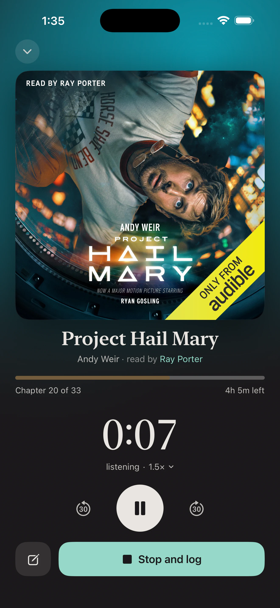
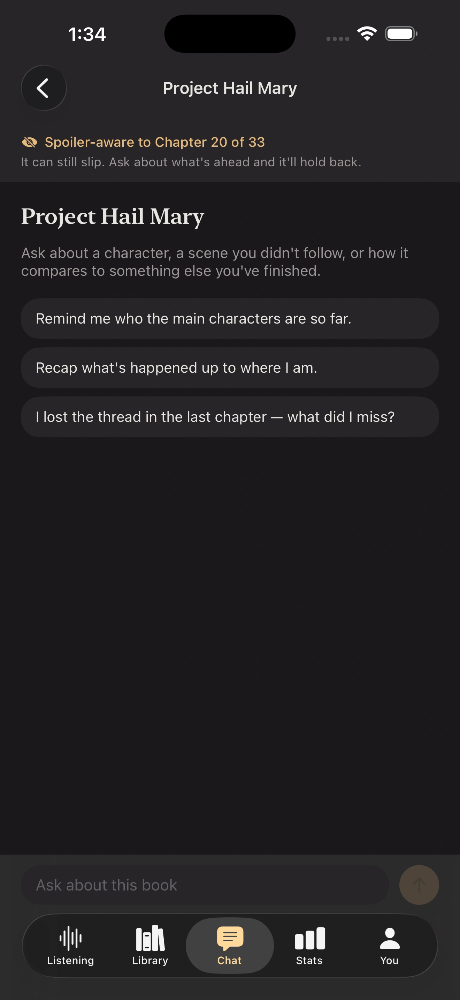

Your place means a chapter
Come back to the exact chapter you stopped on and know how long is left.
The audiobook tracker
Booktrace remembers the parts of your reading life that happen through headphones—your pace, your place, the narrator, and the time that was actually yours.
3-day free trial · iPhone · No account required

Right where you left it
Chapter 6 of 47 One tap to keep listeningWhat other trackers leave out
Come back to the exact chapter you stopped on and know how long is left.
Remember the voices you love and explore every performance by narrator.
Booktrace quietly keeps story time and your actual listening time separate.
Built around the book
Open a book and see its narrator, chapter, time left, recent sessions, and the pace that will get you to the end. Nothing important is buried in a generic reading log.


A month made of books
The calendar leads with the books you actually heard each day, then connects them to your sessions, listening clock, narrators, and the rest of your library.
this month
across 11 listening days


Spoiler-aware chat
Ask for a recap, untangle a character, or work out what you missed. Booktrace gives the conversation your current chapter and asks it to stay behind you.
AI can still make mistakes. The boundary is always visible, and discussion is entirely optional.

Yours means yours
Your library, notes, and listening history stay on your iPhone. Start tracking without creating another account or turning your reading life into a social feed.
Booktrace for iPhone
Try every feature free for 3 days.